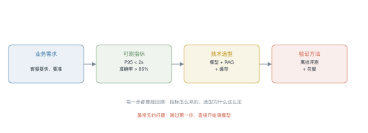
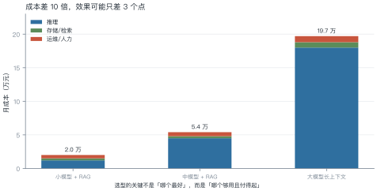
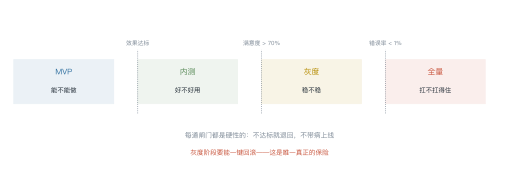
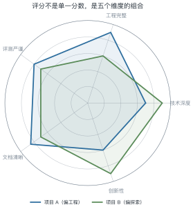

第 24 讲 综合实践¶
本讲位置
全书收尾。前面 23 讲各自解决一个问题，本讲把它们串成一条线：从一句业务需求，到一个能上线的系统。
📅 事实核查至 2026-11
本讲是方法论总结，不涉及具体厂商数据；成本示例均为量级估算。
学习目标¶
学完本讲，你应该能够：
- 把模糊的业务需求翻译成可测的技术指标；
- 用成本与效果的权衡做选型，而不是"用最好的"；
- 设计四个阶段与三道闸门的交付路径；
- 按评分表自评一个项目，找出最短的那块板。
0 直觉：从"知道"到"做出来"¶
学完 23 讲，你知道注意力怎么算、MoE 怎么路由、RAG 怎么切分。但真让你做一个系统，第一个问题往往不是技术问题：
"客服说想要一个智能助手，要快、要准、要能处理复杂问题。"
这句话里没有一个可执行的指标。"快"是多快？"准"是多准？"复杂"是什么？
本讲就从这个翻译开始。
一句话总结
工程能力 = 把模糊需求翻译成可测指标，再用成本约束下的最优方案去满足它。
1 需求翻译¶

例 24.1 把"要快"翻译成延迟预算¶
业务说"响应要在 2 秒内"。拆开看：
| 环节 | 预算 | 说明 |
|---|---|---|
| 网络往返 | 200 ms | 客户端到服务端 |
| 检索（RAG） | 200 ms | 向量检索 + 重排 |
| 首 token 延迟 | 400 ms | prefill |
| 生成 20 token | 1200 ms | 60 ms/token |
| 合计 | 2000 ms | 刚好卡满，没有余量 |
结论：这个预算没有任何冗余。要么把生成压到 15 token（省 300 ms），要么加缓存（命中率 30% 就能省 600 ms）。
这就是"可测指标"的价值：它把"要快"变成了"哪一环超了就砍哪一环"。
2 选型¶

2.1 决策顺序¶
- 先问效果下限：低于这个线，方案直接淘汰；
- 再算成本：在达标的方案里选最便宜的；
- 最后看可维护性：团队能不能 hold 住。
反直觉的结论：很多场景下"小模型 + 好的检索 + 好的提示"能打到"大模型裸跑"的 95%，而成本只有 1/10。
例 24.2 算一次月度成本¶
假设：100 万次请求/月，平均每次输入 1200 token、输出 300 token。
按每百万 token 2 元估算：
加上检索存储（约 3000 元）与运维人力（约 1 万），总成本约 1.6 万/月。
对照：换成大模型（单价 20 元/百万），光推理就是 3 万/月，总成本 4.5 万。
3 实现路径¶

| 阶段 | 目标 | 通过标准 | 典型工期 |
|---|---|---|---|
| MVP | 跑通链路 | 20 条样本能出结果 | 1–2 周 |
| 内测 | 验证效果 | 满意度 > 70% | 2–4 周 |
| 灰度 | 验证稳定性 | 错误率 < 1%，可回滚 | 2 周 |
| 全量 | 验证容量 | 峰值 QPS 下 P95 达标 | 持续 |
MVP 的关键是"窄"：只做一类问题、一个数据源、一个模型。宽了就做不完。
4 评测与上线¶
三层评测（第 23 讲）：
| 层 | 指标 | 阈值 |
|---|---|---|
| 检索 | 上下文召回 | > 0.85 |
| 生成 | 忠实度 | > 0.90 |
| 端到端 | 任务成功率 | > 0.80 |
灰度三件事：
- 流量切分：1% → 5% → 20% → 100%；
- 一键回滚：任何指标异常，30 秒内切回旧版本；
- 对比监控：新旧版本的核心指标并排看。
5 课程项目与评分¶

5.1 项目模板¶
project/
├── README.md 问题定义、指标、结论
├── design.md 选型理由与备选方案对比
├── src/ 可运行代码
├── eval/ 评测集 + 评测脚本 + 结果
├── results/ 基线与消融的表格
└── slides/ 10 分钟汇报
例 24.3 算一次加权总分¶
权重：技术深度 0.30、工程完整 0.25、评测严谨 0.20、文档 0.15、创新 0.10。
项目 A 得分 \([0.7,\ 0.9,\ 0.8,\ 0.85,\ 0.6]\)：
怎么用这个数：看哪一项拉低了总分。A 的创新性只有 0.6，如果提到 0.8，总分能到 0.8025——提升创新比提升技术深度更划算。
WEIGHTS = {
"技术深度": 0.30,
"工程完整": 0.25,
"评测严谨": 0.20,
"文档清晰": 0.15,
"创新性": 0.10,
}
def score(scores: dict[str, float]) -> float:
return sum(scores[k] * w for k, w in WEIGHTS.items())
def weakest(scores: dict[str, float]) -> str:
"""找出「提升空间 × 权重」最大的维度"""
return max(WEIGHTS, key=lambda k: (1 - scores[k]) * WEIGHTS[k])
a = {"技术深度": 0.7, "工程完整": 0.9, "评测严谨": 0.8, "文档清晰": 0.85, "创新性": 0.6}
print(f"总分 {score(a):.4f}，最该补的是「{weakest(a)}」") # 0.7825，创新性
6 工程要点与坑¶
- 先写指标再写代码：没有验收标准的项目，永远做不完。
- MVP 要窄：一类问题、一个数据源、一个模型。
- 成本先算：别等上线才发现账单超预算 10 倍。
- 回滚是底线：没有一键回滚，就不要灰度。
- 评测集自己造：公开基准测不出你的业务效果。
- 文档写给下一个人：三个月后的你，就是那个"下一个人"。
7 论文与延伸阅读¶
| 主题 | 推荐 |
|---|---|
| 系统设计 | 本讲义 L13–L14（推理与训练系统） |
| 应用架构 | L15–L19（上下文、RAG、Agent、多模态） |
| 评测 | L23（评测与治理） |
| 工程实践 | Anthropic, Building Effective Agents |
8 习题¶
🟢 概念题
- 为什么"要快"不是可测指标？给出三个可测的替代。
- MVP 阶段为什么要"窄"？宽了会怎样？
🟡 推导题
- 用例 24.1 的方法，给一个"代码补全"场景做延迟预算（目标 500 ms）。
- 用例 24.3 的权重，算项目 B 的总分，并指出它最该补哪一项。
🔴 实现题
- 用
score与weakest写一个自评脚本，输入五项得分，输出总分与改进建议。 - 从零做一个最小系统：一个 RAG + 一个评测集 + 一张结果表，两周内完成。
9 本讲小结¶
四步翻译
业务需求 → 可测指标 → 技术选型 → 验证方法
三个阶段
MVP（能不能做）→ 灰度（稳不稳）→ 全量（扛不扛得住）
一个原则
选型不是选最好的，是选够用且付得起的。
一句话
工程能力 = 把模糊需求翻译成可测指标，再用成本约束下的最优方案满足它。
来源¶
- 本讲为方法论总结，案例数据为量级估算；引用框架见 §7。